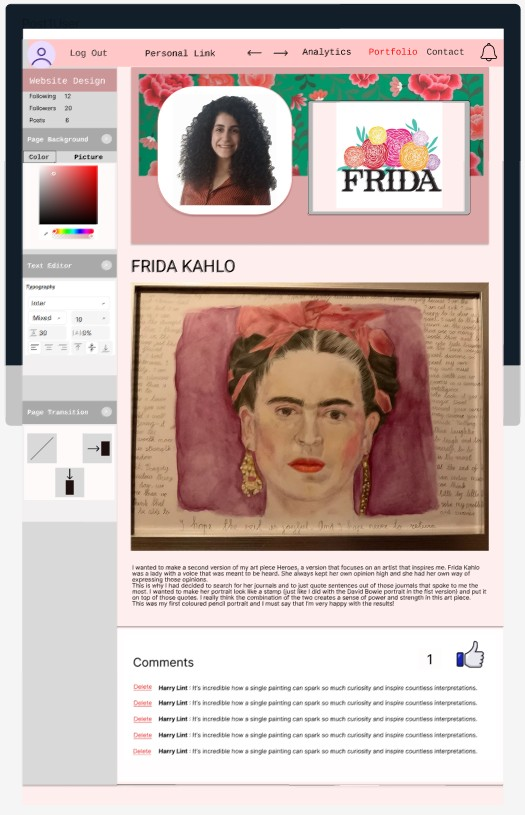

For my current personal project I would like to build a portfolio/ blog application where users can also view each other’s accounts and follow one another. My goal is to create a combination of LinkedIn and a normal social media platform.
I will be using the Agile approach, specifically Scrum, for this application. Agile emphasizes transparency, adaptability and knowledge sharing. I have chosen Scrum because it is one of the most widely used Agile frameworks, as it has a clear structure with predictable sprints.
The program will be built using .NET Core as it is more widely adopted that the .NET Framework. It is even considered the future of .NET, and I want to develop my skills in this area for future use. Additionally, .NET is much more flexible than the .NET Framework since it supports multiple platforms, whereas the .NET Framework is limited to Windows. I am choosing .NET over Java primarily because I already have some familiarity with it, and continuing to work with .NET will deepen my understanding of it.
For the Frontend, I have chosen to work with the JavaScript framework React because it is one of the newer frameworks recognized for its stability. Unlike Angular, which undergoes major updates every six months, React ensures that what I learn now will remain relevant in the future. Additionally, React has a large community, providing a lot of resources for learning. The entry barrier from Angular is also considered to be much higher than that of React.

• As a new user, I want to register for an account and log in securely, so that I can access my personalized portfolio/blog and manage my content.
• As a user, I want to be able to change my password with my email.
• As a user, I want to be able to view another user’s account and follow them/ unfollow them.
• As a user, I want to be able to create a new portfolio item and delete them once they’ve been created.
• As a user, I want to be able to like and to comment on other users’ items.
• As a user, I want to be able to adjust the layout of the portfolio part of my account.
• As a user, I want to be able to view the analytics and notifications of my